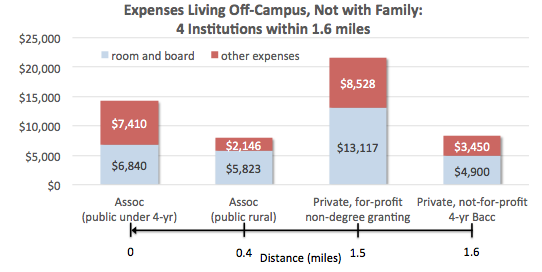

IPEDS data are also available in slightly more user-friendly data in College Navigator, and fewer details are provided in the White House's College Scorecard.
Pitfall #1
Sticker price vs. Net price
Both can be manipulated by colleges through the books and supplies and living expenses elements of Cost of Attendance. This is particularly a concern for students living off-campus.

Source: Braden J. Hosch, SUNY Stony Brook
Sticker price
Few people pay it, unless they are high-income and paying full freight or low income and didn't fill out the FAFSA (a significant group)
For public institutions, beware of differences between in-state and out-of-state tuition and fees
Net price
“Average net price” is deceiving because it doesn’t track people who actually do pay sticker price
Only tracks students during their first year of college
“Net Price by Income” can be affected by differences between FAFSA and PROFILE measures of income for more-selective colleges
Detailed trend data on college pricing and how students/families are paying for college
Graphs and tables are user-friendly
Cons:
They use net tuition, fees, room, and board—leaving out other expenses and books/supplies—so this is not the same as the federal definition of net price
Definition of net price also includes tax credits, which many students don't get
Pitfall #5:
Don't compare a single instutition's net price to the College Board's averages
Question #6:
How much student loan debt are Americans carrying and how does it compare to other types of debt?
Data source #6:
Quarterly Report on Household Debt and Credit (from Federal Reserve Bank of New York)